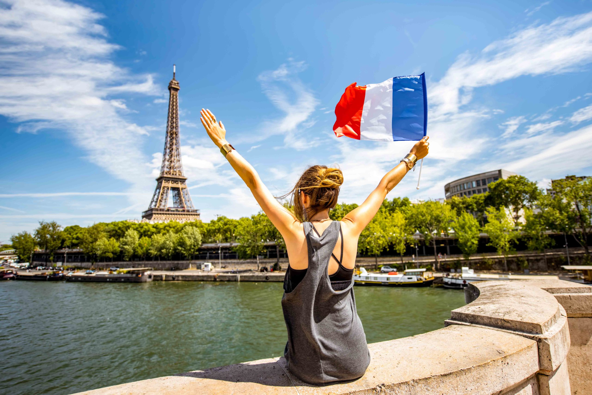

France is a year-round destination, but the best time to visit depends on what you want to experience. Spring and early autumn offer the most pleasant weather, smaller crowds at major attractions, and beautiful scenery. Summer is the peak tourist season — vibrant and festive, but crowded and expensive. Winter brings the magic of Christmas markets, Alpine skiing, and a quieter Paris for those who prefer fewer tourists.
One of the best times to visit France. Temperatures are mild and pleasant (15–22°C), gardens and parks are in full bloom, and the tourist crowds have not yet peaked. Ideal for Paris, the Loire Valley, and Provence. May and June are particularly lovely.
Peak season across France. The French Riviera, Normandy beaches, and Dordogne are at their most vibrant. Bastille Day (July 14) brings nationwide celebrations. Expect higher prices, booking well in advance, and large crowds at popular sites — but also long sunny days and a festive atmosphere.
Arguably the most underrated time to visit. Temperatures remain comfortable in September and October, vineyards are in full harvest, crowds thin out, and prices drop. Burgundy and Bordeaux are spectacular during the wine harvest season. A wonderful time for Paris, Lyon, and Alsace.
The quietest season for tourism outside of ski resorts and Christmas markets. Paris is magical in winter — quieter, with festive decorations and short queues at museums. The Alps offer world-class skiing. Strasbourg's Christmas market is one of Europe's finest. Prices are at their lowest.
Paris Charles de Gaulle (CDG) is France's main international airport and one of Europe's busiest hubs, with direct flights from across the globe. Paris Orly serves additional European and domestic routes. Lyon, Nice, Marseille, and Bordeaux also have international airports with growing networks of connections.
France is connected to the UK via the Eurostar train through the Channel Tunnel (London to Paris in approximately 2 hours 15 minutes). High-speed Thalys trains link Paris to Brussels, Amsterdam, and Cologne. Within France, the TGV high-speed network makes traveling between major cities fast and comfortable.
France is easily accessible by road from neighboring countries including Spain, Italy, Switzerland, Germany, Belgium, and Luxembourg. The French autoroute (motorway) network is excellent but mostly toll-based. Driving is a great way to explore rural regions and areas not well-served by trains.
Several ferry routes connect the UK to France: from Dover to Calais or Dunkirk, from Portsmouth to Caen, Cherbourg, or Le Havre, and from Poole to Cherbourg. Ferries are a practical option for visitors bringing a car, and the crossing from Dover to Calais takes just 90 minutes.
Paris has one of the world's most comprehensive metro systems, with 16 lines and over 300 stations covering virtually every corner of the city. The metro runs from approximately 5:30 am to 1:15 am daily (until 2:15 am on weekends). A carnet of 10 tickets offers the best value for short stays.
The TGV (Train à Grande Vitesse) network connects Paris to all major French cities at speeds of up to 320 km/h: Paris to Lyon in 2 hours, Paris to Marseille in 3 hours, Paris to Bordeaux in 2 hours, and Paris to Nice in approximately 5.5 hours. Book in advance online for the best fares.
France has an excellent network of cycling paths, and many cities offer bike-sharing schemes — Paris's Vélib' system has over 20,000 bikes at 1,400 stations. The Loire Valley and Burgundy wine routes are particularly well-suited to cycling, with dedicated véloroutes passing vineyards and châteaux.
FlixBus and regional bus services connect cities and towns not served by the rail network, often at very low prices. Useful for reaching smaller villages in Provence, Burgundy, and the Dordogne. Always check timetables in advance as rural services can be infrequent.
France uses the Euro (€). Credit and debit cards are widely accepted, including contactless payment. Cash is still useful for smaller markets, village bakeries, and rural restaurants. ATMs (distributeurs) are widely available in all towns and cities.
Wi-Fi is widely available in hotels, cafés, and restaurants. EU mobile data roaming applies for European visitors. For non-EU travelers, purchasing a local SIM card from operators like Orange or Free is inexpensive and provides excellent 4G/5G coverage across France.
France is generally a safe country for tourists. Be vigilant in crowded tourist areas and on the Paris metro against pickpocketing. Emergency services are available on 112 (all emergencies), 15 (medical), 17 (police), and 18 (fire service).
EU citizens can use a European Health Insurance Card (EHIC) for medical treatment. Non-EU visitors should arrange comprehensive travel insurance before arrival. Pharmacies (marked by a green cross) are plentiful and pharmacists are highly trained to advise on minor ailments.
French is the official language. In major tourist areas, English is widely spoken, but making the effort to use basic French phrases is greatly appreciated. Learning "Bonjour," "Merci," "S'il vous plaît," and "Excusez-moi" goes a long way in France.
The Paris Museum Pass (2, 4, or 6 days) gives unlimited access to over 50 museums and monuments including the Louvre, Musée d'Orsay, and Versailles, without queuing for tickets. An excellent investment for art and history enthusiasts.
Browse our destination guides and start planning your perfect French journey.
Start with Paris →